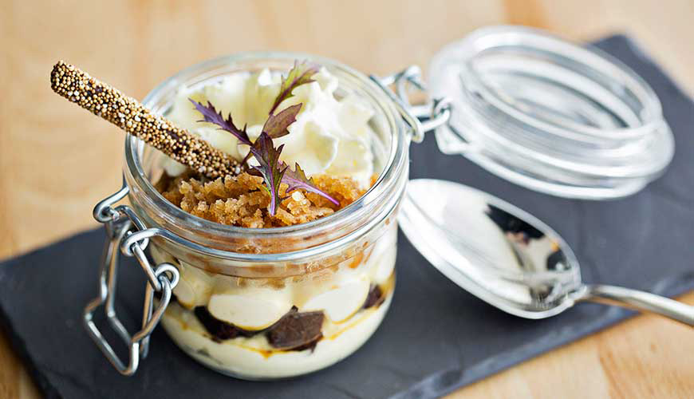
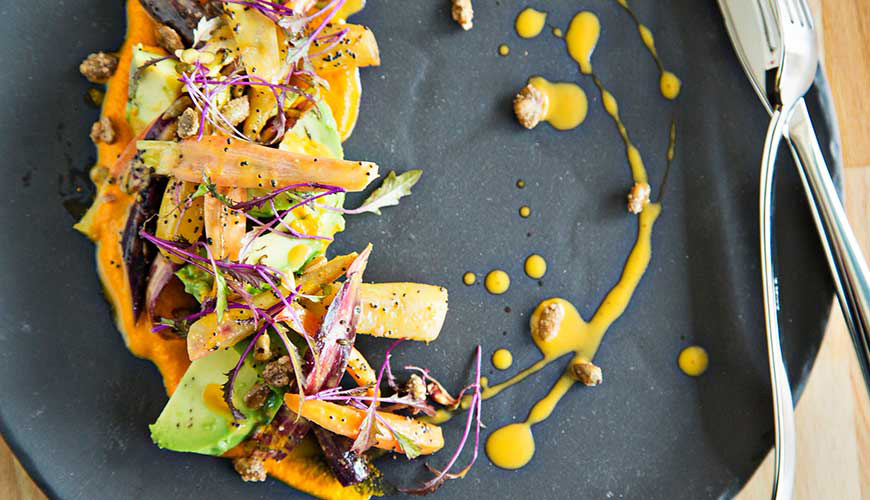
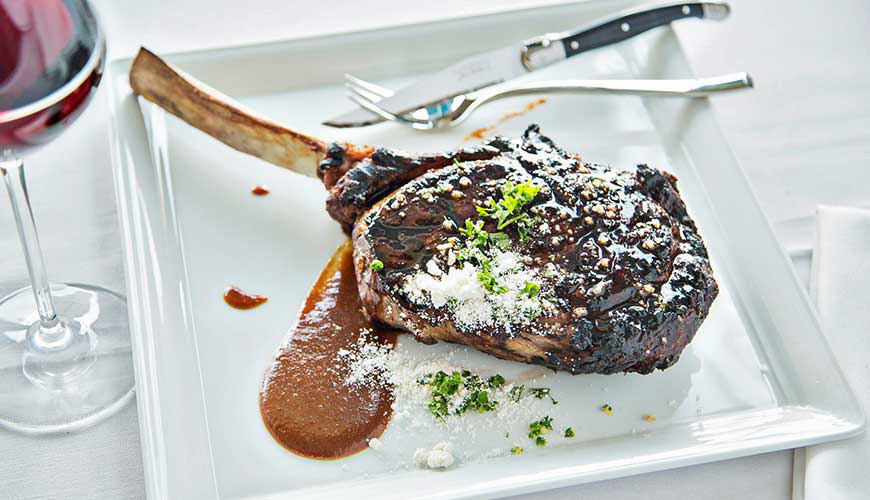
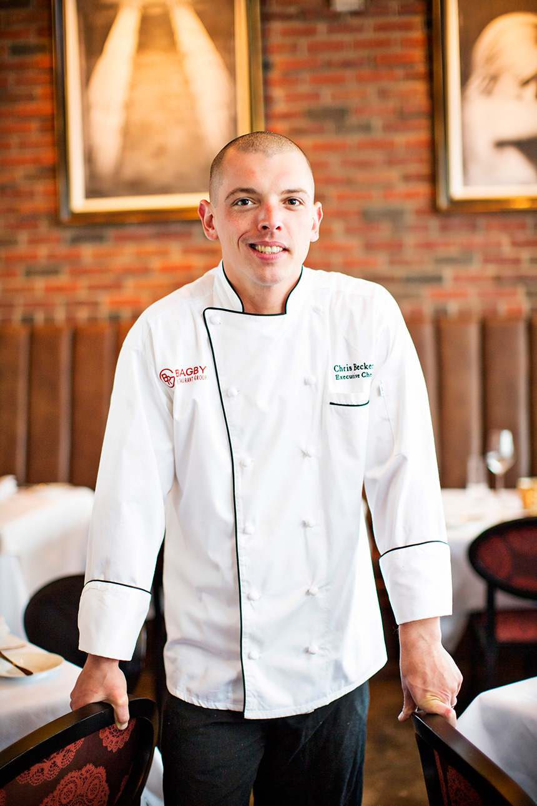

About
Cunningham's is a seasonal American grille that blends the modern atmosphere of city dining with the rustic, smoky flavors of the countryside. Using a wood-fired grill and oven, we provide guests with dishes created from the freshest seasonal and local ingredients possible. We believe that an excellent dining experience is built on thoughtful, attentive service and sourcing products that are grown and crafted responsibly. Each of these aspects contributes to our mission of providing our guests with an unmatched dining experience. We hope that you will visit us soon!
Menu
- 
- 
- 
Team

CHRIS BECKER
Chief Executive Officer & Corporate Executive Chef

ANGIE LAW
Executive Pastry Chef
Chef Angie Law's passion for food began in the kitchen of her mother's small family-run restaurant, where she would help whenever she could after school. Following her love of cooking, she decided to attend Penn State, where she graduated with a degree in food science, and then went on to perfect her culinary skills at L'Academie de Cuisine in Gaithersburg, MD.

JASON LEAR
Executive Chef
Baltimore native, Jason has spent time in kitchens all over Maryland. After graduating from the Culinary Institute of America in Hyde Park, New York, Jason began his career on the Eastern Shore at the Tilghman Island Inn. He returned to Baltimore plying his trade at several notable restaurants including Peerce's Plantation, Bistro RX and The Wine Market.
JOHN AVERSA
Head Baker
A native of Columbia, Maryland, John has been baking bread since his childhood. Growing up with a father who was an avid baker, he became accustomed to baking each and every weekend, drawn to the rigor and precision of the process. Thus, when he decided to attend Baltimore International College, it was only natural that he he gravitated toward their baking program, where he excelled, graduating in 2000.
TIM RILEY
Beverage Director
A Baltimore native, Tim brings an intense passion for beverage service and an extensive knowledge of wine, beer, spirits and coffee to his position at Cunningham's. An honors graduate of the Culinary Institute of America, Tim has worked all over the East Coast. His experience includes stints with Chef Cindy Wolf at both Charleston and Petit Louis in Baltimore; at the Statler Hotel in Ithaca, New York; at the Renaissance Waterfront Hotel in Boston, and at Beacon Grille in Woburn, Massachusetts.
RYAN SHACOCHIS
Director of Restaurant Operations
Ryan began his education in service and hospitality in Cape Cod, Massachusetts while working at restaurants such as Ciro & Sal's, The Governor Bradford, and The Mews. He further refined his approach to service at two well-known Baltimore restaurants: Vespa in Federal Hill, and The Wine Market in Locust Point. He over saw the operation of the restaurant and wine shop, and worked closely with both Chef Becker and Chef Lear to develop seasonal and local menus. His culinary insights and dining advice were featured in both Baltimore Style and Baltimore Magazine.
The Bagby Restaurant Group (BRG) is always seeking passionate, driven and hardworking hospitality and culinary professionals who want to be a part of our team, We offer a variety of positions within our culinary and hospitality departments. These departments are led and managed by proven industry professionals who will detailed training, guidance and support.
BRG offers competitive compensation and a positive and professional work environment designed around the philosophy of putting its “People First.” BRG is proud to offer all management employees a package of employee benefits including: Medical, Dental, and Vision Insurance; Direct Deposit; Fitness Discount Programs; and an Employee Dining incentive program.
BRG offers competitive compensation and a positive and professional work environment designed around the philosophy of putting its “People First.” BRG is proud to offer all management employees a package of employee benefits including: Medical, Dental, and Vision Insurance; Direct Deposit; Fitness Discount Programs; and an Employee Dining incentive program.
Call: (410)339-7730
Reserve online thru OpenTable